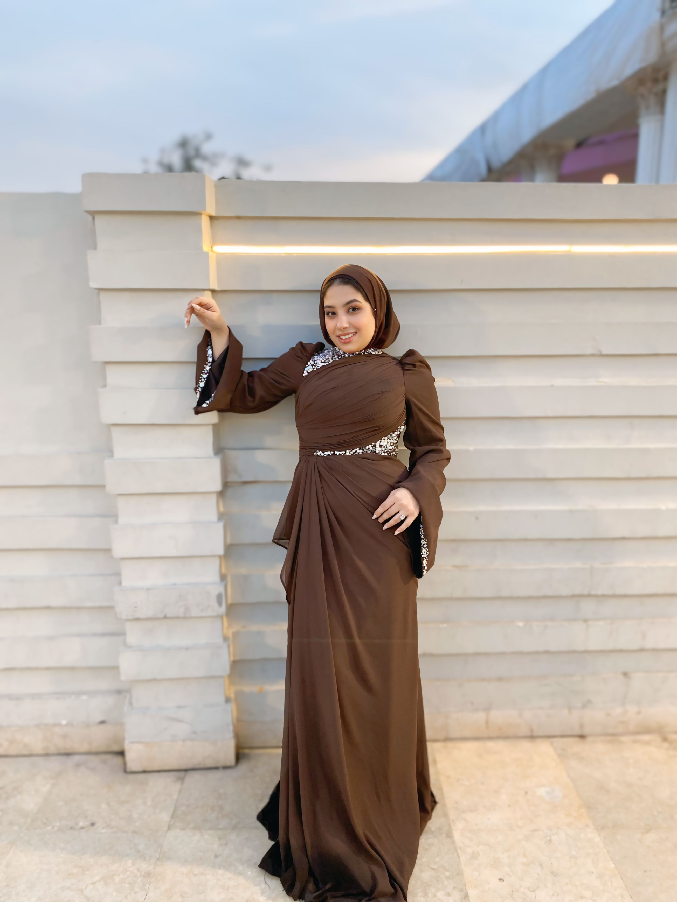
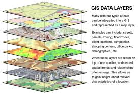
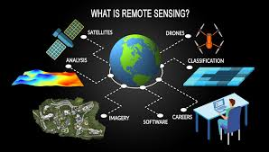

من هي اماني محمد هلال

. هي فتاة ولدت عام 2003 في المملكة العربية السعودية ثم ذهبت الي موطن اهلها الاصلي وهي جمهورية مصر العربية وهي الان تبلغ من العمر22 عام ،تسكن الان في الجيزة وتتعلم في المساحة و نظم المعلومات الجغرافية و الاستشعار عن بعد في جامعة القاهرة
وهذا البرنامج تم اطلاقه في بداية العام الدراسي 2016-2017 بناء علي قرار معالي وزير التعليم العالي رقم (2391) بتاريخ (9/7/2016) يسعي البرنامج الي تحقيق دور ريادي في مجالات المساحة والخرائط ونظم المعلومات الجغرافية لإعداد كوادر متخصصة ومدربة ومؤهلة لتلبية احتياجات سوق العمل محليًا و إقليميًا ودوليًا
اهداف البرنامج
- تطوير المقررات وأساليب التعلم مع طبيعة التخصص، ومتطلبات سوق العمل خاصة المقررات العلمية والعملية الحديثة
- تعميق مفهوم التدريب من خلال التدريب على الأجهزة الحديثة، وتبني مشروعات تطبيقية
- توفير متطلبات سوق العمل والمجتمع من الخدمات العلمية المميزة للبرنامج، وتوجيه العمل العلمي والبحثي لحل المشكلات المجتمعية
- تفعيل دور مخرجات العملية التعليمية والبحثية والارتقاء بكفاءة وفاعلية الخدمات المجتمعية
- وضع أليه للتحسين المستمر في جميع عناصر العملية التعليمية بما يتوافق مع معايير الجودة
وهي لديها خبرة كبيرة في هذا المجال فقامت بدراسة هذا المجال في الجامعة على مدار 4 سنوات بجانب الدورات التدريبية و الكورسات
فمن التدريبات و الكورسات التي قامت بالحصول عليها
- دورة تدريبية في مقاولون العرب في المساحة الارضية
- (autocad - sokia link - sevel 3d - google earth)كورس في برامج المساحة مثل
- في الاستشعار عن بعد(edge pro)دورة تدريبية في شركة
- لتزويد نفسها بأحدث البرامج arc pro كورس في
- advanced remote sensingدورة تدريبية في هيئة الاستشعار عن بعد وعلوم الفضاء في
- دورة تدريبية في هيئة الاستشعار عن بعد و علوم الفضاء في عمل مشروع متكامل باستخدام التقنيات المتقدمة في الاستشعار عن بعد
- قامت بالعمل في شركة خاصة بالمساحة الارضية لمدة 3 سنوات وكانت تعمل في قسم المكتب الفني
geomatics
هو علم و تقنية جمع و تحليل و ادارة و تفسير البيانات الجغرافية المكانية ويجمع هذا المجال بين المساحة و نظم المعلومات الجغرافية و الاستشعار عن بعد و رسم الخرائط و التحليل المكاني ويستخدم تقنيات مثل الاقمار الصناعية و الطائرات بدون طيار و نظم تحديد المواقع العالمي

نظم معلومات جعرافية
GIS

مساحة
SURVEYING

استشعار عن بعد
RS
للتعرف على كل مجال من مجالات دراستها وهما المساحة و نظم المعلومات الجغرافية و الاستشعار عن بعد
المساحة الارضية
المساحة الأرضية (Terrestrial Surveying) هي أحد فروع علم المساحة التي تهتم بقياس ورسم الخرائط للأرض باستخدام أدوات تقليدية وحديثة دون الحاجة إلى استخدام تقنيات الاستشعار عن بعد أو الأقمار الصناعية. تعتمد على القياسات الميدانية باستخدام أجهزة مثل الشريط القياسي، التيودوليت، المحطة الشاملة (Total Station)، وجهاز GPS الأرضي.مجالات عمل المساحة الأرضية
1. المشروعات الهندسية: مثل تصميم وتنفيذ الطرق، السكك الحديدية، الجسور، والسدود
2. التخطيط العمراني: تحديد حدود الأراضي، تخطيط المدن، وتقسيم المناطق السكنية والصناعية
3. الزراعة والري: حساب المساحات الزراعية، وتصميم أنظمة الري والصرف
4. المساحة العقارية: توثيق الملكيات العقارية وتحديد الحدود القانونية للأراضي
5. المساحة الجيوديسية: تحديد المواقع الجغرافية بدقة على نطاق واسع
6. المساحة التعدينية: قياس ورسم خرائط للمناجم واستكشاف الموارد الطبيعية
7. المساحة البحرية: قياس أعماق البحار والمسطحات المائية لتحديد التضاريس تحت الماء
8. المساحة العسكرية: لأغراض التخطيط الاستراتيجي ورسم الخرائط التكتيكية

نظم المعلومات الجغرافية
(Geographic Information Systems - GIS)
نظم المعلومات الجغرافية هي نظم حاسوبية متكاملة تجمع بين البيانات المكانية (الجغرافية) والبيانات الوصفية، وتساعد في تخزين وتحليل وعرض وإدارة هذه البيانات لاتخاذ قرارات أفضل. تعتمد نظم المعلومات الجغرافية على الخرائط الرقمية وقواعد البيانات، حيث يمكن تحليل العلاقات المكانية والاتجاهات والتغيرات الجغرافية
مجالات عمل نظم المعلومات الجغرافية
1. التخطيط العمراني وإدارة المدن: تستخدم في تخطيط المدن، وإدارة المرافق العامة، وحل مشكلات الزحام المروري
2. إدارة الموارد الطبيعية: تحليل تغير الغابات، ومتابعة التغير المناخي، وإدارة مصادر المياه
3. المساحة ورسم الخرائط: إنتاج الخرائط الرقمية وتحليل البيانات الطبوغرافية
4. الزراعة وإدارة الأراضي: تحديد المناطق الزراعية المناسبة، وتحليل خصوبة التربة
5. إدارة الكوارث والأزمات: تتبع الأعاصير، الفيضانات، الزلازل، وتخطيط الاستجابة للطوارئ
6. البيئة وحماية الطبيعة: مراقبة التلوث، ورصد التغيرات البيئية، وحماية الحياة البرية
7. المواصلات واللوجستيات: تحسين أنظمة النقل، وتخطيط الطرق، وتحليل تدفق المرور
8. الأمن والدفاع: استخدام GIS في التخطيط العسكري، والاستخبارات، والمراقبة الحدودية
9. السياحة وإدارة المواقع الأثرية: تحليل وتطوير المناطق السياحية
10. إدارة البنية التحتية: صيانة وإدارة شبكات المياه، والكهرباء، والصرف الصحي
الاستشعار عن بعد
(Remote Sensing)الاستشعار عن بعد هو علم وتقنية جمع المعلومات عن سطح الأرض دون الحاجة إلى الاتصال المباشر به، وذلك باستخدام الأقمار الصناعية، الطائرات، والطائرات المُسيّرة (الدرونز). يتم تحليل البيانات التي تجمعها المستشعرات المختلفة، مثل الكاميرات، وأجهزة الرادار، وأجهزة قياس الأشعة تحت الحمراء، للكشف عن الظواهر الطبيعية والبشرية.
مجالات عمل الاستشعار عن بعد
1. التخطيط العمراني: تحليل التوسع العمراني، وتقييم استخدامات الأراضي
2. إدارة الموارد الطبيعية: رصد الغابات، وتحليل التربة، وتتبع مصادر المياه
3. الزراعة: مراقبة صحة المحاصيل، وتحديد المناطق القابلة للزراعة، ورصد التصحر
4. المناخ والأرصاد الجوية: دراسة التغيرات المناخية، ورصد الأعاصير، وتحليل درجات الحرارة
5. الكوارث الطبيعية: تتبع الزلازل، والفيضانات، والبراكين، وتقييم الأضرار بعد الكوارث
6. المساحة والخرائط: إنتاج خرائط طبوغرافية وتحديثها باستمرار
7. علم المحيطات: دراسة التيارات البحرية، ورصد التلوث البحري، ومراقبة الشعاب المرجانية
8. الجيولوجيا والتعدين: الكشف عن المعادن، وتحليل تكوين الصخور، وتحديد مناطق الزلازل
9. الأمن والدفاع: مراقبة الحدود، ورصد النشاطات العسكرية، وتحليل الصور الجوية
10. السياحة والآثار: اكتشاف المواقع الأثرية، وتحليل المواقع السياحية من خلال الصور الفضائية
للتواصل معها اترك بياناتك
| التخصص | المهنة | الشركة |
|---|---|---|
| استشعار | تحليل صور فضائية / تصنيف اراضي / رصد التغيرات | هيئة الاساشعار عن بعد / شركات الزراعة الذكية |
| مساحة | رفع مساحي / توقيع مساحي / حساب كميات / رسم خرائط | مقاولين العرب / اوراسكوم / حسن علام / بتروجيت |
| نظم معلومات جغرافية | جمع و معالجة البيانات / انشاء قواعد بيانات / انتاج خرائط | الهيئة العامة للتخطيط / esri / smart gis / concord |